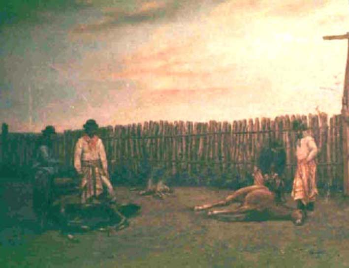

|
|  |
|
Bernabé Demaría, Marcando yeguada
|
Folk and popular custom only started to enter the pantheon of national heritage in the last decade of the nineteenth century: the National Historical Museum of Buenos Aires, despite its virtually exclusive focus on a chivalric history of independence, aslo acquired, shortly after its inauguration in 1889, a collection of costumbristic paintings by Bernabé Demaría, brother-in-law of the museum's director Adolfo P. Carranza. Whilst probably a gesture of personal favour, the acquisition of the series nonetheless also responded to a growing interest and concern among members of the Creole elite to select those versions of the popular rural past it deemed worthy and edifying (Ernesto Quesada, who wrote the official guide to the museum, was also the author of El criollismo en la literatura argentina, 1902, one of the first systematic discussions of how popular art should be integrated into the heritage of the nation).
|